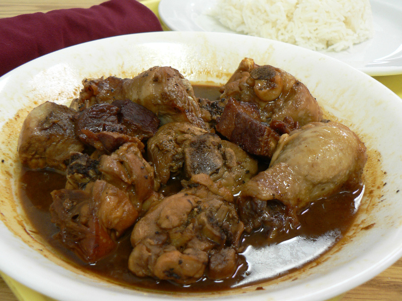

Adobong Manok Recipe

Description:
Adobong manok, often called "chicken adobo," is often considered the
national dish of the Philippines. Although the origins of its name are are
with the Spanish colonizers — adobo is the Spanish word for a marinade —
Filipinos have been making tart, vinegar-based dishes since time
immemorial
The vinegar marinade makes a dish that stores very well in the Filipino
heat. Endless varieties of adobo exist and each region has its own
specialty. Besides chicken and pork, adobo can be made with fish, squid,
green bean and even eggplant.
Ingredients
- Chicken, cut into serving pieces -- 2 1/2 to 3 pound
- White vinegar -- 3/4 cup
- Soy sauce -- 1/4 cup
- Onion, thinly sliced -- 1/2
- Garlic, crushed -- 4 to 6 cloves
- Bay leaf -- 1-2
- Peppercorns -- 6 to 8
- Salt -- 1 teaspoon
- Water -- 1 cup
- Oil -- 1/4 cup
Steps
-
Add the chicken pieces, vinegar, soy sauce, onion, garlic, bay leaf,
peppercorns and salt to a large, non-reactive bowl and refrigerate for
anywhere from one to four hours to marinate.
-
Place the chicken and its marinade in a large pot. Add the water and
bring to a boil over medium-high heat. Reduce heat to low and simmer for
30 to 45 minutes, or until the chicken is cooked through and tender. Add
water as necessary to keep the chicken from drying out.
-
Remove the chicken from its sauce, reserving the sauce, and pat dry.
Heat the oil in a skillet over medium-high flame and saute the chicken
pieces to brown them. Remove from heat and set aside.
-
Bring the remaining sauce to a boil over medium flame and cook until
somewhat reduced and thickened.
-
Toss the browned chicken pieces with the reduced sauce and serve with
rice.
Go back home?